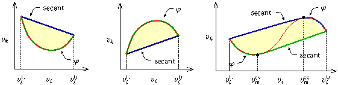

Consider the image set \(\Gamma:\{{\bf g}({\bf x}) \,\mid\, {\bf x}^{\rm L}\leq{\bf x}\leq{\bf x}^{\rm U}\} \subseteq \mathbb R^m\), where \(g_j:\mathbb{R}^n\to\mathbb R, j=1,\ldots,m\), are factorable, potentially nonconvex functions. The classes mc::PolImg and mc::PolVar implement an arithmetic for the construction of a polyedral enclosure \(\Gamma\) of the set \(\overline{\Gamma}\) in the form:
\begin{align*} \overline{\Gamma} := \left\{ {\bf G} {\bf v}\; \middle|\; \begin{array}{l} {\bf A} {\bf v} \;=\; {\bf 0}\\ {\bf B} {\bf v} \;\leq\; {\bf 0}\\ {\bf v}^{\rm L}\leq{\bf v}\leq{\bf v}^{\rm U} \end{array} \right\} \supseteq \Gamma\, , \end{align*}
where the variable vector \(v\) contains the original variable vector \(x\)
These classes build upon the DAG classes mc::FFGraph and mc::FFVar. Both are templated in the interval type used to bound the nonlinearity of the function, By default, mc::PolImg and mc::PolVar can be used with the non-verified interval type mc::Interval of MC++. For reliability, however, it is recommended to use verified interval arithmetic such as PROFIL (header file mcprofil.hpp) or FILIB++ (header file mcfilib.hpp). Note that the implementation in mc::PolImg and mc::PolVar is not verified in the sense that rounding errors are not accounted for in the polyhedral cuts.
What is the theory behind polyhedral relaxations?
The basic procedure follows three steps: (i) decompose the factorable functions \(g_j\) into atom operations, both unary and binary operations, by introducing auxiliary variables and extra constraints (lifting); (ii) generate convex enclosures for the nonlinear operations, including products, divisions and outer-compositions with nonlinear univariates such as exp, log, sin, cos, etc; and (iii) outer-approximate the nonlinear parts of the convex enclosures using supporting hyperplanes at finitely many points. Each step is detailed further below.
- Step 1. Decomposition/Lifting
\begin{align*} \Gamma:\{{\bf g}({\bf x}) \,\mid\, {\bf x}^{\rm L}\leq{\bf x}\leq {\bf x}^{\rm U}\} & \xrightarrow{\displaystyle\text{decomp.}} && \overline{\Gamma} := \left\{ {\bf G} {\bf v}\; \middle|\; \begin{array}{l} {\bf A} {\bf v} \;=\; {\bf 0}\\ v_k = v_iv_j,\ \forall (i,j,k)\in\mathcal{B}\\ v_k = \frac{v_i}{v_j},\ \forall (i,j,k)\in\mathcal{F}\\ v_k = \varphi(v_i),\ \forall (i,k)\in\mathcal{U}\\ {\bf v}^{\rm L}\leq{\bf v}\leq {\bf v}^{\rm U} \end{array} \right\} \end{align*}
The advantage of this decomposition, which may be applied to any factorable function, is that it accounts for common subexpressions, thus enables tighter relaxations. Its main drawback, on the other hand, is that it may introduce a large number of auxiliary variables and constraints. - Step 2. Relaxation
- The bilinear terms \(v_k = v_iv_j\), \(v_i^{\rm L}\leq v_i\leq v_i^{\rm U}\), \(v_j^{\rm L}\leq v_j\leq v_j^{\rm U}\), can be replaced by their polyhedral envelopes as
\begin{align*} v_k=v_iv_j \quad \xrightarrow{\displaystyle\text{relax.}}\quad \left\{\begin{array}{l} v_k \geq v_i^{\rm L}v_j+v_j^{\rm L}v_i-v_i^{\rm L}v_j^{\rm L}\\ v_k \geq v_i^{\rm U}v_j+v_j^{\rm U}v_i-v_i^{\rm U}v_j^{\rm U}\\ v_k \leq v_i^{\rm U}v_j+v_j^{\rm L}v_i-v_i^{\rm U}v_j^{\rm L}\\ v_k \leq v_i^{\rm L}v_j+v_j^{\rm U}v_i-v_i^{\rm L}v_j^{\rm U} \end{array}\right. \end{align*}
- The fractional terms \(v_k = \frac{v_i}{v_j}\), \(v_i^{\rm L}\leq v_i\leq v_i^{\rm U}\), \(v_j^{\rm L}\leq v_j\leq v_j^{\rm U}\), \(0\notin[v_j^{\rm L},v_j^{\rm U}]\), can be rewritten as bilinear terms \(v_i = v_jv_k\) and relaxed as indicated above, with the following bounds for the variables \(v_k\):
\begin{align*} \min\left\{\frac{v_j^{\rm L}}{v_k^{\rm L}}, \frac{v_j^{\rm L}}{v_k^{\rm U}}, \frac{v_j^{\rm U}}{v_k^{\rm L}}, \frac{v_j^{\rm U}}{v_k^{\rm U}}\right\} =: v_k^{\rm L} \leq v_k \leq v_k^{\rm U} := \max\left\{\frac{v_j^{\rm L}}{v_k^{\rm L}}, \frac{v_j^{\rm L}}{v_k^{\rm U}}, \frac{v_j^{\rm U}}{v_k^{\rm L}}, \frac{v_j^{\rm U}}{v_k^{\rm U}}\right\} \end{align*}
Note that, although straightforward, this approach of dealing with fractional terms does not generally yield the convex/concave envelopes (which turn out to be quite complicated nonlinear expressions – see References).
- The univariate terms \(v_k = \varphi(v_i)\), \(v_i^{\rm L}\leq v_i\leq v_i^{\rm U}\), are relaxed differently depending on whether the function \(\varphi\) is convex, concave, convexo-concave, etc., on \([v_i^{\rm L},v_i^{\rm U}]\).
\begin{align*} \text{convex case:} & \quad v_k=\varphi(v_i) \quad \xrightarrow{\displaystyle\text{relax}} \quad \left\{\begin{array}{l} v_k \geq \varphi(v_i)\\ v_k \leq \varphi(v_i^{\rm L}) + \frac{\varphi(v_i^{\rm U})-\varphi(v_i^{\rm L})}{v_i^{\rm U}-v_i^{\rm L}}(v_i-v_i^{\rm L}) \end{array}\right.\\ \text{concave case:} & \quad v_k=\varphi(v_i) \quad \xrightarrow{\displaystyle\text{relax}} \quad \left\{\begin{array}{l} v_k \geq \varphi(v_i^{\rm L}) + \frac{\varphi(v_i^{\rm U})-\varphi(v_i^{\rm L})}{v_i^{\rm U}-v_i^{\rm L}}(v_i-v_i^{\rm L})\\ v_k \leq \varphi(v_i) \end{array}\right.\\ \text{convexo-concave case:} & \quad v_k=\varphi(v_i) \quad \xrightarrow{\displaystyle\text{relax}} \quad \left\{\begin{array}{l} v_k \geq \left\{\begin{array}{ll} \varphi(v_i), & \text{if $v_i\leq v_{\rm m}^{\rm cv}$}\\ \varphi(v_i^{\rm U}) + \frac{\varphi(v_i^{\rm U})-\varphi(v_{\rm m}^{\rm cv})}{v_i^{\rm U}-v_{\rm m}^{\rm cv}}(v_i-v_i^{\rm U}), & \text{otherwise} \end{array}\right.\\ v_k \leq \left\{\begin{array}{ll} \varphi(v_i), & \text{if $v_i\geq v_{\rm m}^{\rm cc}$}\\ \varphi(v_i^{\rm L}) + \frac{\varphi(v_i^{\rm L})-\varphi(v_{\rm m}^{\rm cc})}{v_i^{\rm L}-v_{\rm m}^{\rm cc}}(v_i-v_i^{\rm L}), & \text{otherwise} \end{array}\right. \end{array}\right.\\ & \quad \text{with:}\ v_{\rm m}^{\rm cv},v_{\rm m}^{\rm cc}\in[v_i^{\rm L},v_i^{\rm U}]:\ \varphi'(v_{\rm m}^{\rm cv}) = \textstyle\frac{\varphi(v_i^{\rm U})-\varphi(v_{\rm m}^{\rm cv})}{v_i^{\rm U}-v_{\rm m}^{\rm cv}} \text{ and } \varphi'(v_{\rm m}^{\rm cc}) = \textstyle\frac{\varphi(v_i^{\rm L})-\varphi(v_{\rm m}^{\rm cc})}{v_i^{\rm L}-v_{\rm m}^{\rm cc}} \end{align*}

- The bilinear terms \(v_k = v_iv_j\), \(v_i^{\rm L}\leq v_i\leq v_i^{\rm U}\), \(v_j^{\rm L}\leq v_j\leq v_j^{\rm U}\), can be replaced by their polyhedral envelopes as
- Step 3. Polyhedral Outer-Approximation
Every convex, nonlinear univariate constraint generated in Step 2 is outer-approximated by constructing supporting cuts at a number of well-chosen points. Although the resulting polyhedral relaxations are inherently weaker than the nonlinear relaxations, LP solvers are currently more robust and faster than NLP solvers.
An iterative scheme (a.k.a. sandwich algorithm) can be applied that adds linearization points in such a way that the maximum distance \(\delta^{\rm max}\) between the nonlinear constraint and its polyhedral approximation decreases as the inverse of the square of the number \(n\) of linearization points; that is, \(\delta^{\rm max}\propto \frac{1}{n^2}\). This algorithm proceeds as follows:- Construct cuts at both interval end-points \(v_i^{\rm L}\) and \(v_i^{\rm U}\)
- REPEAT
- Identify an interval \([v_i^\ell,v_i^{\ell+1}]\) with maximum outer-approximation error \(\delta_{\rm max}\)
- Subdivide \([v_i^\ell,v_i^{\ell+1}]\) at a suitably chosen point \(v_i^{\rm new}\)

How to generate a polyhedral relaxation of a factorable function?
For illustration, suppose that we want to compute a polyhedral enclosure for the image set of function:
\[ {\bf g}(x) := \left(\begin{array}{c} \log(x_1)+x^2_2 \\ \sin(x_1)-\cos(x_2) \\ \end{array} \right) \qquad \text{with} \qquad x \in [1,5]\times [2,6]. \]
For simplicity, the underlying interval bounds are propagated using the default interval type mc::Interval, the required header files are:
First, the DAG of the vector function \({\bf g}\) is defined:
The following output is displayed, including the auxiliary variables created during the DAG decomposition of the factorable functions:
DAG VARIABLES:
X0 => { Z1 Z4 }
X1 => { Z0 Z3 }
DAG INTERMEDIATES:
Z0 <= SQR( X1 ) => { Z2 }
Z1 <= LOG( X0 ) => { Z2 }
Z2 <= Z0 + Z1 => { }
Z3 <= COS( X1 ) => { Z5 }
Z4 <= SIN( X0 ) => { Z5 }
Z5 <= Z4 - Z3 => { }
Next, the polyhedral relaxation environment is created and the main variables are initialized:
Then, the polyhedral relaxation of the image set is initialized by propagating bounds for the lifted variables through the DAG:
This produces the following output, where no cuts have been generated to define the polyhedral enclosure yet:
VARIABLES: X0 in [ 1.00000e+00 : 5.00000e+00 ] (DAG: X0) X1 in [ 2.00000e+00 : 6.00000e+00 ] (DAG: X1) X2 in [ 4.00000e+00 : 3.60000e+01 ] (DAG: Z0) X3 in [ 0.00000e+00 : 1.60944e+00 ] (DAG: Z1) X4 in [ 4.00000e+00 : 3.76094e+01 ] (DAG: Z2) X6 in [ -1.00000e+00 : 9.60170e-01 ] (DAG: Z3) X5 in [ -1.00000e+00 : 1.00000e+00 ] (DAG: Z4) X7 in [ -1.96017e+00 : 2.00000e+00 ] (DAG: Z5) NO AUXILIARY NO BILINEAR OR FRACTIONAL TERM NO CUT
Finally, polyhedral cuts are generated and displayed as follows:
VARIABLES: X0 in [ 1.00000e+00 : 5.00000e+00 ] (DAG: X0) X1 in [ 2.00000e+00 : 6.00000e+00 ] (DAG: X1) X2 in [ 4.00000e+00 : 3.60000e+01 ] (DAG: Z0) X3 in [ 0.00000e+00 : 1.60944e+00 ] (DAG: Z1) X4 in [ 4.00000e+00 : 3.76094e+01 ] (DAG: Z2) X6 in [ -1.00000e+00 : 9.60170e-01 ] (DAG: Z3) X5 in [ -1.00000e+00 : 1.00000e+00 ] (DAG: Z4) X7 in [ -1.96017e+00 : 2.00000e+00 ] (DAG: Z5) NO AUXILIARY NO BILINEAR OR FRACTIONAL TERM CUTS: + 1.00000e+00X2 + 1.00000e+00X3 - 1.00000e+00X4 = -0.00000e+00 + 1.00000e+00X5 - 1.00000e+00X6 - 1.00000e+00X7 = -0.00000e+00 + 4.00000e+00X3 - 1.60944e+00X0 >= -1.60944e+00 + 1.00000e+00X0 - 1.00000e+00X3 >= 1.00000e+00 + 1.00000e+00X0 - 5.00000e+00X3 >= -3.04719e+00 + 1.00000e+00X0 - 2.75054e+00X3 >= -3.24492e-02 + 1.00000e+00X0 - 1.80361e+00X3 >= 7.39860e-01 + 1.00000e+00X0 - 3.81983e+00X3 >= -1.29953e+00 + 4.00000e+00X2 - 3.20000e+01X1 <= -4.80000e+01 + 1.00000e+00X5 - 5.40302e-01X0 <= 3.01169e-01 + 1.00000e+00X5 + 0.00000e+00X0 <= 1.00000e+00 + 1.00000e+00X5 - 2.73845e-01X0 <= 6.07581e-01 + 1.00000e+00X5 - 4.08535e-01X0 <= 4.42948e-01 + 1.00000e+00X5 - 1.37362e-01X0 <= 7.93681e-01 + 1.00000e+00X5 + 0.00000e+00X0 <= 1.00000e+00 + 1.00000e+00X5 + 6.31638e-01X0 <= 2.19927e+00 + 1.00000e+00X5 + 3.22022e-01X0 <= 1.55814e+00 + 1.00000e+00X5 + 4.79346e-01X0 <= 1.87021e+00 + 1.00000e+00X5 + 1.61734e-01X0 <= 1.26716e+00 + 1.00000e+00X6 - 3.44637e-01X1 <= -1.10542e+00 + 1.00000e+00X6 - 2.79415e-01X1 <= -7.16323e-01 + 1.00000e+00X2 - 4.00000e+00X1 >= -4.00000e+00 + 1.00000e+00X2 - 1.20000e+01X1 >= -3.60000e+01 + 1.00000e+00X2 - 8.00000e+00X1 >= -1.60000e+01 + 1.00000e+00X2 - 6.00000e+00X1 >= -9.00000e+00 + 1.00000e+00X2 - 1.00000e+01X1 >= -2.50000e+01 + 1.00000e+00X5 + 5.35701e-01X0 >= 1.37717e+00 + 1.00000e+00X5 + 0.00000e+00X0 >= -1.00000e+00 + 1.00000e+00X5 + 2.71443e-01X0 >= 2.42071e-01 + 1.00000e+00X5 + 4.04992e-01X0 >= 8.25290e-01 + 1.00000e+00X5 + 1.36150e-01X0 >= -3.67693e-01 + 1.00000e+00X5 + 0.00000e+00X0 >= -1.00000e+00 + 1.00000e+00X5 - 2.83662e-01X0 >= -2.37724e+00 + 1.00000e+00X5 - 1.42321e-01X0 >= -1.68082e+00 + 1.00000e+00X5 - 2.13178e-01X0 >= -2.02739e+00 + 1.00000e+00X5 - 7.12210e-02X0 >= -1.33816e+00 + 1.00000e+00X6 + 9.09297e-01X1 >= 1.40245e+00 + 1.00000e+00X6 + 0.00000e+00X1 >= -1.00000e+00 + 1.00000e+00X6 + 4.78987e-01X1 >= 3.87705e-01 + 1.00000e+00X6 + 7.05713e-01X1 >= 9.55690e-01 + 1.00000e+00X6 + 2.41998e-01X1 >= -2.69168e-01 + 1.00000e+00X6 + 0.00000e+00X1 >= -1.00000e+00 + 1.00000e+00X6 - 8.07940e-01X1 >= -3.88747e+00 + 1.00000e+00X6 - 4.18937e-01X1 >= -2.40524e+00 + 1.00000e+00X6 - 6.19996e-01X1 >= -3.14699e+00 + 1.00000e+00X6 - 2.11107e-01X1 >= -1.68558e+00
By default, the cuts in the polyhedral relaxation of a convex univariate terms are generated according to the maximum error rule (see above), and a maximum of 5 cuts are generated for each nonlinear constraint. The cut generation is also controlled by the absolute and relative tolerances on the maximum outer-approximation error, which are both set to \(10^{-3}\) by default. All these default values can be altered as explained below in the section What are the options in computing a polyhedral relaxation? below.
All the cuts can be retreived by using the function mc::PolImg::Cuts, which returns a set of cuts as defined in the class mc::PolCuts.
What are the options in computing a polyhedral relaxation?
All the options are defined in the structure mc::PolImg::Options, and the default values can be altered via the public static member mc::PolImg::options; for example:
What errors may be encoutered in computing a polyhedral relaxation?
Errors are managed based on the exception handling mechanism of the C++ language. Each time an error is encountered, an instance of the class mc::PolImg::Exceptions is thrown, which contains the type of error. Additional exceptions may be sent by the template argument class in propagating the bounds through the DAG, as well as by the DAG class itself. It is the responsibility of a user to test whether an exception was thrown, and then make the appropriate changes. Should an exception be thrown and not caught by the calling program, execution will abort.
References
- Tawarmalani, M., and N.V. Sahinidis, Global optimization of mixed-integer nonlinear programs: A theoretical and computational study, Mathematical Programming, 99(3):563-591, 2004.
- Smith, E.M.B, and C.C. Pantelides, A symbolic reformulation/spatial branch-and-bound algorithm for the global optimisation of nonconvex MINLPs, Computers & Chemical Engineering, 23(4-5):457-478, 1999.